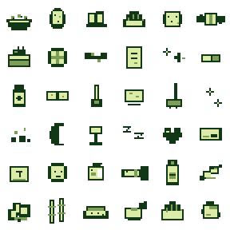

Desktop shell
- Electron, React, TypeScript, Vite runtime.
- Transparent frameless pet overlay.
- Always-on-top setting and tray controls.
- Single-instance behavior and explicit quit path.
- Crash-safe save file with backup recovery.
A repo-grounded snapshot of what Deskagotchi is today, what V2 must feel like, and the concrete work needed to get from prototype to a usable long-term desktop companion.
Deskagotchi is already past a blank prototype. It has the native Electron shell, a transparent overlay pet, care interactions, a manifest-based pet package system, a local Hatch prototype, QA harnesses, and a cohesive monochrome LCD asset direction. It is not yet a fully satisfying Tamagotchi-like companion because the long-term care loop, evolution consequences, desktop feel, and some UX polish still need to mature. Custom pet generation is archived for V2 planning until the asset pipeline is designed properly.

Shih tzu desk companion. Sweet, calm, snack-curious.

Cat-like desk companion. Curious, cozy, alert.

Monkey-like desk companion. Playful, curious, energetic.

Elephant-like desk companion. Gentle, playful, patient.

Duck desk companion. Cheerful, waddly, tidy.
Food, toy, medicine, clean, and sleep items are packed into a lightweight monochrome atlas. Pet packages reference item ids for favorite, liked, shared, and disliked foods. The current food icons are functional but not yet at the V2 recognizability bar.

The approved V2 direction is monochrome LCD toy art: readable tiny silhouettes, limited palette, transparent sprites, compact icon-first care UI, and no large web-app panels in the normal pet overlay.
The current simulation is deterministic and useful, but V2 needs clearer care deadlines, mistakes, illness duration, sleep/wake rhythm, and evolution branch consequences so the pet feels alive over weeks.
Current Hatch proves package installation, but production custom generation is not simple enough to include casually. V2 should not promise user-facing Hatch until the generation, approval, packaging, QA, moderation, and failure-recovery flow is designed.
Bao, Miso, Mochi, Peanut, and Puddles now look directionally good, but V2 should enforce consistent frame anchors, expressive eating and play frames, readable small-size silhouettes, recognizable food icons, and no row that looks static by accident.
Dragging and multi-monitor support exist, but V2 needs more evidence across DPI scaling, negative-coordinate monitors, sleep/wake resume, startup restore, click-through state, and close-to-tray behavior. Frozen-window cleanup, tray recovery, and always-on-top correctness are release gates after the main companion features are improved.
Ball play is a good direction, but V2 needs a polished pet chase loop, no ugly boundary affordances, obvious exit, scoring or affection feedback, and good behavior on all monitor sizes.
Windows packaging exists, but V2 needs installer QA, update-safe save migrations, startup-on-boot validation, resource size checks, and a clear local data/export story.
V2 should feel like a small living creature on the laptop, not a normal web app in a window. The user can leave it running for weeks, drag it around, care for it without opening a full panel, feed it food that visually matches the pet, play with it, watch moods and growth change from care quality, and switch between original built-in pets while custom generation remains deferred R&D.
Remove remaining overlay friction: no accidental full panel opens from care actions, compact controls never cover the pet at rest, drag feels native, close/quit behavior is predictable, and play mode exits cleanly.
Add explicit care deadlines, discipline calls, sleep/lights windows, illness duration, mess consequences, and stage-specific care scoring. Keep constants centralized, tests deterministic, and the living simulation spec updated with each rule change.
Re-QA Bao, Miso, Mochi, Peanut, and Puddles against the same checklist: stable size, readable silhouette, real animation motion, good eating cues, and consistent LCD style.
Use pet-specific food choices that animals actually like, keep shared foods simple, improve food icons until they are recognizable without labels, render the selected food while eating, and make Ball play feel like a pet chase interaction rather than a debug physics demo.
Keep the custom pet generation prototype out of the V2 promise. Preserve safe import/export and package validation, document the open design questions, and revisit Hatch after the core pet loop is good enough to justify generated assets.
After the main care, pet, food, and play features settle, verify frozen-window cleanup, tray recovery, always-on-top, startup-on-boot, sleep/wake recovery, high-DPI displays, multiple monitors, save migration, installer behavior, and resource size.
| Area | Next tasks | Acceptance evidence |
|---|---|---|
| Overlay UX | Audit button placement, pet occlusion, transient tray/card sizing, X buttons, Escape handling, and all care actions. | `corepack pnpm run qa:desktop:overlay`, screenshots, manual click-through check. |
| Drag and monitors | Stress drag on primary, right-side, left-side negative-coordinate, stacked, and scaled displays. | `corepack pnpm run qa:desktop:drag`, bounds logs, manual DPI note. |
| Desktop hardening | Verify frozen-window cleanup, tray recovery, explicit quit, always-on-top persistence, sleep/wake refresh, click-through state, and play-mode bounds restore. | `corepack pnpm run qa:desktop:launch`, `qa:desktop:lifecycle`, `qa:desktop:play`, manual desktop acceptance, and updated `docs/qa/desktop-hardening-v2.md`. |
| Simulation V2 | Add care/deadline model, sleep windows, illness age, discipline calls, stage mistake windows, and evolution branch rules. | Unit tests for each rule, offline catch-up snapshots, and updated `docs/simulation/care-simulation-v2.md`. |
| Pet assets | Run visual QA on each pet row, repair weak rows, and document any accepted limitations in contact sheets. | `corepack pnpm run qa:assets:pets`, updated gallery, per-pet contact sheets. |
| Items and food | Finalize shared/species food catalog, redraw unclear food icons, and validate selected-food eating cue per pet. | `corepack pnpm run qa:assets:items`, food contact sheet review, feed picker smoke, eating screenshots. |
| Hatch archive | Remove Hatch from the V2 user promise, keep custom generation as an explicit future design discussion, and preserve safe package import/export only. | Roadmap says deferred, UI copy does not overpromise, package security tests remain covered. |
| Packaging | Build installer, verify state survives updates, keep packaged resources lean, and document recovery paths. | `corepack pnpm run package:win`, install smoke, local data inspection. |